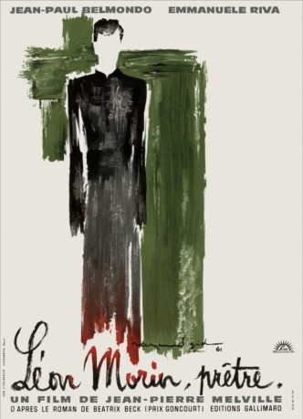
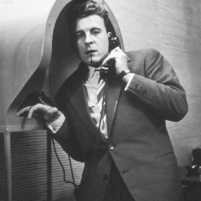
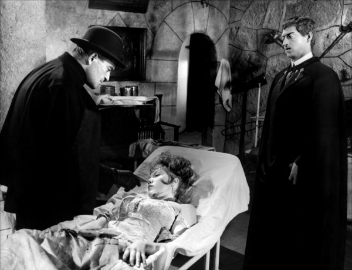

#7433 Eva und der Priester
Alternativ: Léon Morin, Priest (Englischer Titel)
 
 IMDB-Wertung: 7.8 / 10
IMDB-Wertung: 7.8 / 10  Metascore: 0
Metascore: 0 
Pariserin Barny lebt mit ihrer Tochter während der Besatzungszeit in einer kleinen Provinzstadt. Sie hat ihren Glauben an Gott verloren, bis sie den katholischen Priester Léon Morin kennen lernt, in den sie sich zwar unglücklich verliebt, dem es aber gelingt, sie in den Glauben zurück zu führen. mediabiz.de: Nach dem Roman von Beatrix Beck (1952) inszenierte Jean-Pierre Melville ein subtiles und wahrhaftiges Frauenporträt, die Geschichte einer unmöglichen Liebe, eines Priesters und einer falschen Konversion. Er hält die theologischen Elemente der Erzählebenen durch die kämpferische Haltung des von Jean-Paul Belmondo imponierend verkörperten Priesters Morin in produktiver Schwebe.
Jahr: 1961
Dauer: 128 Minuten
FSK: 12
Land: Frankreich Studio: Arthaus FilmverleihTonspuren:
Untertitel: Deutsch,
Auflösung: 1080p (1792x1080) Größe: 8960 MB
Genre: Drama, Liebe
Regisseur: Jean-Pierre Melville
Drehbuch: Béatrix Beck
Soundtrack:
Darsteller:
 Jean-Paul Belmondo als Léon Morin
Jean-Paul Belmondo als Léon Morin- Emmanuelle Riva als Barny
-  Gérard Buhr als Gunther
-  Howard Vernon als The colonel
- Volker Schlöndorff als Un soldat allemand , uncredited
- Irène Tunc als Christine Sangredin
- Nicole Mirel als Sabine Levy
- Gisèle Grimm als Lucienne
- Marco Behar als Edelman
- Monique Bertho als Marion
- Marc Eyraud als
- Nina Grégoire als
- Monique Hennessy als Arlette
- Edith Loria als
- Micheline Schererre als
- Renée Liques als
- Simone Vannier als
- Lucienne Marchand als
- Nelly Pitorre als
- Ernest Varial als
- Chantal Gozzi als
- Cédric Grant als American soldier
- George Lambert als American soldier
- Marielle Gozzi als France, older
- Patricia Gozzi als France
- Claude Achard als
- André Badin als
- Madeleine Ganne als
- Adeline Aucoc als Femme , uncredited
- Maurice Auzel als Homme dans l'eglise St Bernard , uncredited
- Louis Saintève als Un homme , uncredited
Datei: X:\1961\Eva und der Priester (1961, FSK12, 1792x1080).mkv seit 10.11.2017
Festplatte: HD 1900-1970
 Es gibt insgesamt 22 Filme in der Gruppe '1961'
Es gibt insgesamt 22 Filme in der Gruppe '1961'